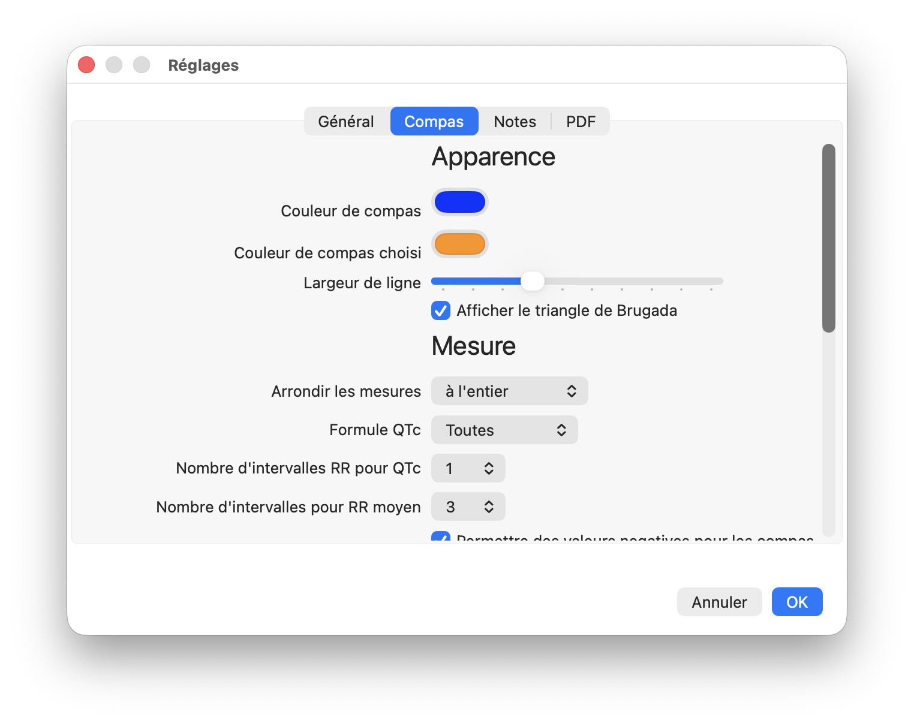

Réglages
Réglages
Les réglages peuvent être modifiés avec la commande de menu Compas EP | Réglages. Ils sont regroupés dans les onglets Général, Compas, Notes et PDF. Vous pouvez ajuster le comportement au démarrage, l’apparence des compas, les valeurs par défaut des mesures, la position des étiquettes, l’apparence des notes et le comportement des pages PDF.
De nombreux réglages définissent les valeurs par défaut utilisées lors de nouvelles mesures. Par exemple, si vous utilisez habituellement un seul intervalle RR pour les mesures du QTc, réglez le nombre par défaut d’intervalles RR moyens pour le QTc sur 1. Vous pouvez toujours remplacer ces valeurs par défaut au moment de la mesure.

Figure 1: Réglages
Réglages expliqués
Général
- Mode transparent au démarrage: Rendez la fenêtre principale transparente. Compas EP peut alors être utilisé comme un compas flottant pour mesurer tout élément ouvert sur votre bureau. Ce réglage prend effet immédiatement et démarre aussi l’application en mode fenêtre transparente au prochain lancement.
- Afficher un exemple d’ECG au démarrage: Sélectionnez cette option pour afficher un exemple d’ECG normal au démarrage. Si elle n’est pas cochée, l’application démarre avec un écran d’accueil.
- Afficher les messages-guides: Les messages-guides vous accompagnent pendant les étapes d’étalonnage et de mesure. Ils sont utiles lorsque vous apprenez à utiliser le programme, mais il est plus rapide de désactiver cette option. Notez que, même lorsque cette option est décochée, les messages-guides sont toujours affichés pendant les mesures du QTc.
Compas
- Apparence
- Couleur du compas non sélectionné: C’est la couleur des nouveaux compas non sélectionnés. Notez que cette couleur peut être modifiée pour un compas particulier en faisant un clic droit sur le compas et en choisissant Couleur du compas.1
- Couleur du compas sélectionné: C’est la couleur du compas sélectionné.
- Largeur de ligne du compas: Augmentez ou diminuez ce curseur pour rendre les lignes des compas plus épaisses ou plus fines.
- Afficher le triangle de Brugada: Affichez automatiquement la base du triangle de Brugada sur les compas d’angle lorsque les compas de temps sont étalonnés et que les compas d’amplitude sont étalonnés en millimètres.
- Mesure
- Arrondir les mesures: Choisissez la façon dont les valeurs en msec et les fréquences sont affichées. Les choix comprennent l’arrondi à l’entier le plus proche (par exemple 305,463 devient 305 et 1010,728 devient 1011), l’affichage de 4 chiffres significatifs (par exemple 305,5 et 1011), l’arrondi aux dixièmes (par exemple 305,5 et 1010,7) et l’arrondi aux centièmes (305,46 et 1010,73). Notez que les valeurs en secondes, les valeurs utilisant d’autres unités et les valeurs calculées comme le QTc sont toujours affichées avec 4 chiffres.
- Formule QTc: Choisissez une formule de QTc. Choisissez « Toutes » pour utiliser toutes les formules.
- Nombre d’intervalles RR moyens pour le QTc: Le nombre d’intervalles utilisé par défaut pour mesurer l’intervalle RR moyen lors des mesures du QTc.
- Nombre d’intervalles RR moyens: Le nombre d’intervalles utilisé par défaut pour mesurer les intervalles RR moyens.
- Autoriser les valeurs négatives des compas: Si cette option est cochée, les mesures des compas peuvent avoir des valeurs négatives.
- Étalonnage
- Étalonnage de temps: C’est la valeur par défaut qui apparaît dans la zone de texte d’étalonnage personnalisé lors de l’étalonnage des compas de temps. Si vous utilisez habituellement une certaine valeur d’étalonnage, par exemple 200 msec, il est utile de modifier cette valeur par défaut.
- Étalonnage d’amplitude: C’est la valeur par défaut pour l’étalonnage personnalisé des compas d’amplitude. Saisissez la valeur que vous utilisez habituellement pour l’étalonnage.
- Étiquettes
- Taille de la police des étiquettes de compas: Ajustez la taille du texte des étiquettes de compas.
- Positionnement automatique des étiquettes: Le texte du compas évite d’être masqué par les bords de la fenêtre ou par le compas lui-même en se déplaçant. Par exemple, si une étiquette de compas se trouve à droite du compas et que celui-ci est trop proche du bord droit de la fenêtre, l’étiquette se déplace vers la gauche du compas.
- Position de l’étiquette des compas de temps: Placez l’étiquette des compas de temps au-dessus ou au-dessous du centre de la barre transversale, ou à gauche ou à droite du compas.
- Position de l’étiquette des compas d’amplitude: Placez l’étiquette des compas d’amplitude en haut ou en bas du compas, ou à gauche ou à droite de la barre transversale.
- Compas marchants
- Atténuer les composants marchants: Si cette option est sélectionnée, les composants marchants apparaissent légèrement moins visibles que le compas principal.
- Nombre de composants marchants: Ajustez le nombre de composants de compas marchant, de 1 à un maximum de 20.
Notes
- Taille de la police du texte des notes: Ajustez la taille du texte des nouvelles notes.2
- Couleur du texte des notes: Ajustez la couleur du texte des nouvelles notes.
- Largeur de la zone de texte des notes: Définissez la largeur de la zone de texte des notes.
- Hauteur de la zone de texte des notes: Définissez la hauteur de la zone de texte des notes.
- Résolution PDF: Choisissez la résolution utilisée pour le rendu des pages PDF. Une résolution plus élevée peut rendre les images PDF plus nettes, mais elle peut utiliser plus de mémoire et ralentir les changements de page.
- Effacer les compas entre les pages: Supprimez les compas de la page PDF précédente lors du changement de page.
- Réétalonner les compas entre les pages: Effacez automatiquement l’étalonnage lors du changement de page PDF.
- Réinitialiser le zoom de l’image entre les pages: Réinitialisez le zoom à la taille réelle de l’image lors du changement de page.
- Réinitialiser la rotation de l’image entre les pages: Réinitialisez la rotation de l’image lors du changement de page.